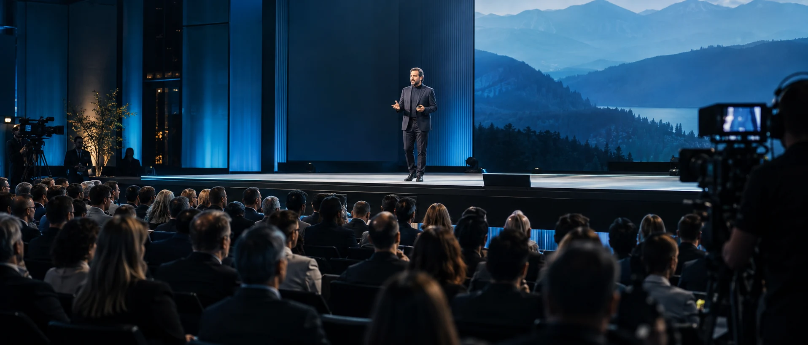
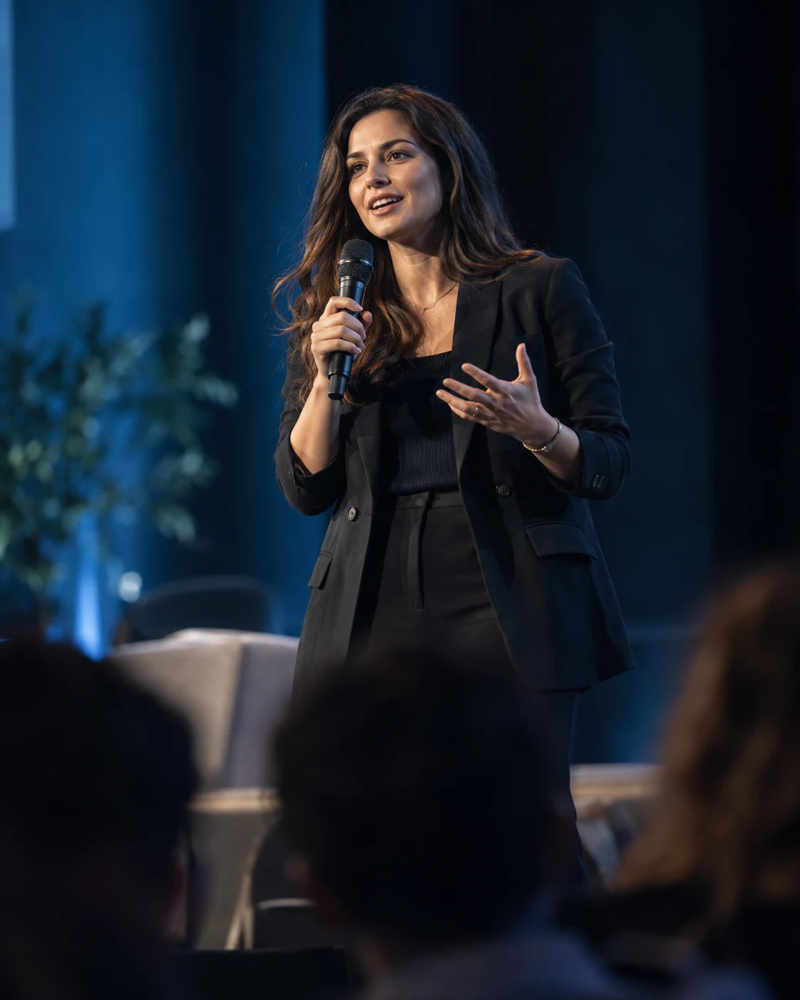
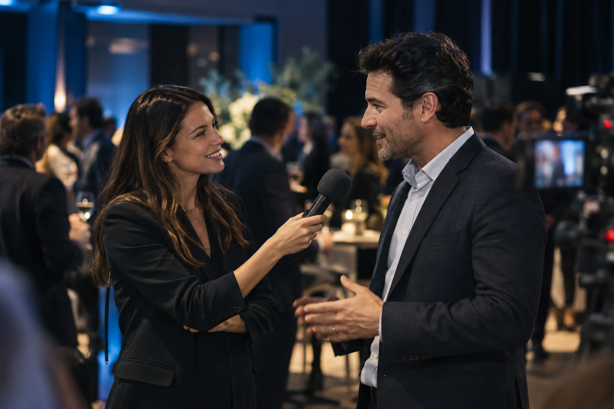

01 //
Cobertura en Redes Sociales en Tiempo Real
Stories · Reels · Posteos
Publicaciones en stories, reels o posteos desde diferentes momentos del evento: previa, durante y cierre.
Viví el evento, nosotros creamos el contenido. Contenido visual y cobertura en redes sociales durante el evento, con piezas verticales para compartir.

Fotos, videos y clips editados durante la jornada para compartir los momentos destacados del evento.

Clips verticales para compartir en redes sociales durante el evento.

Contenido de entrevistas e interacción en vivo durante el evento.
Cobertura en redes sociales, contenido visual, interacción y promoción de marca durante el evento.
Stories · Reels · Posteos
Fotos · Clips Editados Rápidos · En el Lugar
Menciones · Etiquetas · Interacción
Sponsors · Mensajes clave · Hashtags oficiales
Entrevistas e interacción en vivo durante el evento, según el formato de la cobertura.
Contenido previo y reel posterior al evento, disponibles como servicio adicional.
Reporte de métricas de la cobertura, según lo acordado para el evento.
Adaptación de las piezas a las redes sociales definidas para la cobertura.
Edición de clips rápidos en el lugar para publicar durante el evento.
Selección de momentos destacados del evento para compartir en redes sociales.
Revisión de los momentos del evento, mensajes clave y hashtags oficiales.
Fotos, videos, stories y reels durante el evento, con clips editados para compartir en redes sociales.
Momentos destacados del cierre; el reel posterior y el reporte de métricas pueden sumarse según la propuesta.
Community Management e Influencer Marketing pueden complementar la cobertura de eventos según las necesidades de la marca.
Agendá una sesión gratuita para conversar sobre la cobertura de tu evento.